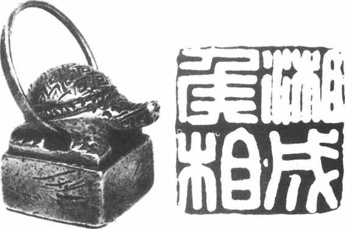

公元前221年，秦始皇统一中国，秦王朝成为中国第一个中央集权的封建帝国。在这样的历史条件下，封建的政治制度也向前发展到一个新的阶段。这时期，封建地主阶级为了加强中央集权和君主专制的统治，在职官制度上确立了中央朝廷的三公九卿制和继续实行地方的郡县制体制。三公九卿制在秦朝只是初具规模，由于秦王朝的短命，这一制度在西汉时得到进一步的调整和完善。
《汉书·百官公卿表》记载，丞相、太尉、御史大夫是秦汉时的三公，主持国政，号称万石之官，是朝廷的中枢职官。实际上它们也有一个发展演变的过程。
丞相 丞相是朝廷最高的行政长官，“掌丞天子，助理万机”［6］。秦及西汉前期都有左、右丞相（秦汉皆以右为上）。秦二世时又增设中丞相，以赵高充任。因赵高是宦官，所以“中”是指内廷。对于特别受到尊宠的丞相，可授予“相国”的尊称。秦始皇时的吕不韦、汉高祖时的萧何都曾为相国。汉代丞相之下有丞相史若干，从事秘书工作，长史为其长。武帝时，丞相府又设司直，掌察举违法之官。
汉武帝为了加强皇权专制，常常破格提拔一些出身微贱的人才，任用他们为中大夫、诸郎等，平时在皇帝周围出谋划策，形成所谓“内朝官”。汉武帝利用他们与丞相为首的朝廷行政官员们即所谓“外朝官”相抗衡；同时又常常通过少府所属的尚书署草拟诏令，转达奏章，以便于亲自裁决政事，以致丞相之权日渐削弱。武帝死后，霍光以大司马、大将军领尚书事的头衔主持朝政，其权势反在丞相之上。西汉末年，丞相更名大司徒，其权力、位次都在大司马之下，并且与大司马、大司空合称三公。
刘邦在夺取天下的战争中也常以相国、左右丞相的虚衔授给一些武将，因此史书中也常在虚衔前加“假”字。
东汉初，以太尉、司徒、司空为三公，合称三司。和帝时，邓骘以车骑将军仪同三司，于是三司之外又有“仪同”之号，意思是虽无三公的名号，但在待遇上与三公一样。东汉皇帝多为幼年嗣位，于是常以太傅录尚书事作为辅弼，主持朝政。这样，太傅更在三公之上，称为上公，或与三公合称四府。东汉皇帝为集权于己，也常通过尚书台发号施令，于是三公的权位进一步削弱，只能处理一些例行公事。东汉末年撤去三公，设置丞相、御史大夫。
太尉 《汉书·百官公卿表》说太尉是秦官，但在其他文献中尚未能得到证实。秦有国尉，为领兵作战的武将，但地位并不很高。汉代的太尉或许是由国尉演变而来的。
西汉前期，太尉为最高军事长官。刘邦死后，太尉一官时设时缺。武帝初年撤去此官。后来设置大司马，并冠于“某将军”之前，成为全国最高级的军事统帅。武帝死后，霍光以大司马、大将军领尚书事的头衔主持朝政，其职掌远不限于武事，权位逐渐跃居丞相之上了。东汉初又取消大司马，恢复了太尉的名号。
御史大夫 御史大夫作为丞相之副，其职掌有二：一为掌管天下文书图籍、呈递公卿奏章，颁布皇帝诏令等，类似皇帝的机要秘书长；二是掌管朝廷内外监察，为全国最高的监察长官。据《汉书·高帝纪》记载，西汉皇帝的诏令由御史大夫向相国（丞相）颁布，相国（丞相）再向诸侯王颁布；同时由御史中丞向各郡守颁布。汉代丞相一职出缺时，则按例常以御史大夫递补。刘邦也曾以御史大夫虚衔授予统兵将领。汉武帝为了加强君主专制，亲自裁决政事，逐渐将御史大夫所担负的机要秘书工作交给尚书署办理，于是御史大夫的职权日见缩小。西汉后期改御史大夫为大司空，东汉则称司空。
秦汉时，御史大夫之下有御史中丞，统领侍御史若干人，具体负责对朝廷百官的监察以及掌管国家收藏在兰台的图书档案；同时统管地方的监察长官刺史。
秦朝时，在地方各郡派有监御史，督察地方官员。
西汉初，曾废除御史监郡的制度。汉武帝时把全国划分为十三部州，作为监察区。每州下辖若干郡，长官为刺史。州刺史根据朝廷规定的六条标准督察地方官吏。武帝晚年，又设置司隶校尉，负责察举京城三辅、“三河”（河内、河东、河南）及弘农等郡官民违法行奸之事，成为监察系统的重要官员。西汉御史监察系统的官署叫御史府或御史大夫寺，东汉改称御史台或兰台寺，所以古人也把监察官员称作“台官”。
九卿是指中央朝廷的九个重要官员和官署，它们是：
奉常 汉代改称太常，掌宗庙礼仪、占卜祭祀等事，史官、博士等为其下属。
郎中令 为皇帝的侍从武官长，属官有大夫、郎、谒者等。郎是皇帝的侍从扈卫人员，有中郎、侍郎、郎中之分。太中大夫等及议郎为非武装人员，掌议论。
汉武帝时，郎中令改称光禄勋，职掌不变。又设期门郎、羽林郎，为皇帝微行出猎时的武装侍从。
卫尉 掌管各宫门的守卫，属官有仆射、公车司马令等。汉代，卫尉统领的军队称南军。
太仆 掌管皇帝的舆马，及军事用马的牧养。
廷尉 掌管刑罚讼狱，是全国的最高司法官。朝廷遇有大狱，皆由廷尉审理。
典客 掌管接待少数民族、藩属国来朝事宜。汉武帝时，改称大鸿胪，掌管诸侯王、列侯及内附部族朝觐郊迎之事。
宗正 主管皇族宗室（包括公主）事务。属官有都司空，掌管对宗室犯罪之人的处置。
治粟内史 掌管国家谷帛租赋。汉武帝时改称大司农。汉初，治粟内史仅掌农业及仓廪，另有“大内”一官与之并行，掌管国家财政。改大司农后，大内为其属官，称都内，主管财货，掌国家的金库。
少府 掌管全国山海池泽之税，以供给皇帝私用，凡皇帝的衣食起居、医药供奉、器物制作等皆在其属下，因此是宫廷事务的总管。武帝以后，其职权日益缩小，但是其下属尚书署作为皇帝的机要秘书处则权势不断提高，后来终于脱离少府，独立成尚书台，分曹治事（指分科办事）。
实际上，中央朝廷除了九卿，还有一些重要的高级官员，例如：
中尉 掌管京师地区的戍卫治安。汉武帝时改称执金吾，平时巡逻街市，皇帝出巡则为前导。
将作少府 主管宫室、宗庙、陵园的土木建筑工程。汉景帝时改称将作大匠。
典属国 掌管归附的少数民族的事务。汉成帝时，典属国并入大鸿胪。
水衡都尉 汉武帝时设置，掌管上林苑及诸池航政。
秦时有侍中、散骑、中常侍、给事中等官，多由宦官充任，以侍奉皇帝。汉朝沿袭秦制，有侍中、散骑常侍、给事中、诸吏等官号，朝廷官员如具有这些官号，便可随时出入禁中，以备顾问应对。这些官号被称为加官。其中给事中可审核尚书奏事，诸吏可纠察弹劾内廷诸官，散骑随从皇帝乘舆之后，可随时提出建议。
秦汉地方实行郡、县制。至东汉末年，形成了州、郡、县三级行政制度。
秦朝的京师行政由内史掌管。内史位秩与列卿等同，也参议朝政。西汉武帝以后，京师分为京兆尹、左冯翊、右扶风三部分，分别由三官治理，称为三辅。三辅长官位同列卿，可参议朝政。
东汉迁都洛阳，京师行政改由河南尹治理。
东汉末年，作为监察区划的州的长官刺史，逐渐具有了行政、军事大权，于是州便成为郡上一级的行政区划了，刺史也就成为集行政、军事、监察等大权于一身的地方大员了。
郡是地方高级行政区划，东汉末年，其上又有州。郡的长官，秦时称守或郡守，汉景帝以后改称太守。下有郡丞，为其佐助。又有郡尉，掌管一郡的军事甲卒，汉景帝以后改称都尉。（图5—2）
图5-2 张掖都尉棨信，甘肃居延肩水金关遗址出土
汉代与郡同级的还有诸侯王国。刘邦称帝后，翦除异姓诸王，除长沙国外，只封刘氏子弟为王，所封之地称国。汉初的诸王国割据一方，有自己的军队，所置官署与中央朝廷一样。当时朝廷只向王国委派太傅（辅导诸王）和丞相（统率王国百官），御史大夫以下官员，都由诸王自己任命。经过一段时间以后，诸王国的势力对中央朝廷威胁越来越大，并且最终酿成公元前154年的吴楚七国的叛乱。为了限制和打击地方王国的势力，汉景帝接受晁错的“削藩”建议，命令诸侯王不得过问王国的行政事务，撤销诸王对官吏的任免权，并且改丞相为相，掌管王国民政，直接向朝廷负责。此外，还裁撤了一批官吏。汉武帝进一步实行“推恩令”：“令诸侯以私恩自裂地，分其子弟，而汉为定制封号，辄别属汉郡。”［7］从此“诸侯惟得衣食租税，不与政事”［8］了。东汉王国制度同西汉。
秦汉时，郡下辖若干县。万户以上的县，长官为县令；万户以下的设县长，均由朝廷任命。县的令、长之下设有县丞，为其佐助之官；又设县尉，掌管一县的甲兵军事。据出土的湖北云梦秦简看，秦朝每县不止一个尉，多者可有四尉。史书中有时称县的丞、尉为县长吏；对县的低级官吏如斗食、佐史等称为县少吏，县官署中也是分曹治事，例如被称为主吏的功曹，便是主管县少吏的选用和考绩。此外还有主管文书的令史，主管监狱的狱掾等官吏。（图5—3）
图5-3 望都汉墓壁画侍阁图（摹本）
据《汉书·百官公卿表》记载，县之下还有乡、亭、里。“大率十里一亭，亭有长。十亭一乡，乡有三老、有秩、啬夫、游徼，三老掌教化。啬夫职听讼，收赋税。游徼徼循禁贼盗。”汉代统治者强调对人民的思想控制，因此十分重视三老制度，东汉时甚至在郡和王国都设置三老。亭的设置同邮驿制度有关。
列侯的食邑称侯国。汉代以县令、长为侯国的相，主管侯国行政，他们不向列侯称臣，只供给地租。
秦汉时期，官的等级称秩，以“石”数区分，而另以斛计算各级的俸禄米谷。唐代颜师古在《汉书·百官公卿表》注中对此虽做了一些介绍，但实际上在不同时期是有变化的。根据史籍记载，两汉时期的官秩大体有如下一些级别：万石、中二千石、真二千石、二千石、比二千石、千石、比千石（东汉无）、八百石、比八百石（西汉成帝时将这两级废去）、六百石、比六百石、四百石、比四百石、三百石、比三百石、二百石、比二百石（东汉增）、百石、斗食、佐史。
据聂崇岐《汉代官俸质疑》推断，西汉官秩约有20级，东汉约有16级。西汉的俸禄，有时是钱谷均发，但后期似乎全部折钱；东汉则大致是钱谷兼发。
秦自商鞅变法后，逐渐形成20等爵制度，它们是：
一级曰公士，二上造，三簪袅，四不更，五大夫，六官大夫，七公大夫，八公乘，九五大夫，十左庶长，十一右庶长，十二左更，十三中更，十四右更，十五少上造，十六大上造，十七驷车庶长，十八大庶长，十九关内侯，二十彻侯。
爵本来是统治阶级内部体现不同政治地位的等级称号，由于秦在与山东六国争雄的战争中，大力推行军功爵制，就把爵的使用扩大到平民范围中来，这就使爵的社会作用大为增强，因此秦人的官职和爵位往往混同使用。
秦朝不封王，汉初则封有一批同姓王和异姓王，后来刘邦定下只封同姓子弟为王的誓约，所以汉朝的最高爵位实际是王。此外，汉朝还袭用秦20等爵制，只是因避讳汉武帝之名，把彻侯改为通侯。秦汉时又把第八级爵以下称为民爵，以上为官爵，普通吏民获爵不得超出第八级公乘爵。在秦汉确立了统一的封建帝国以后，军功爵制难以推行，于是爵位的使用又逐渐恢复到统治阶级内部了。
汉武帝在对匈奴的战争中，为了奖励军功和缓解财政拮据，曾另设11等级的武功爵，允许富人用钱买爵，但不久就停止了。
东汉后期增设了县侯、乡侯、亭侯等爵。这些侯虽然以某县、某乡、某亭的地名相称，但实际上只是虚名，并不在该地食邑。
汉代区分官员等级的服饰主要是冠和绶。
汉代文官戴进贤冠，冠上有突起的梁，据《后汉书·舆服志》记载：“公、侯三梁；中二千石以下至博士两梁；自博士以下至小史私学弟子，皆一梁，宗室刘氏亦两梁冠。”这是以冠上梁数区分官职高低。
在秦汉，绶是区分官职高低的最明显的标志。先秦时，绶是贵族、官员佩戴玉饰时系玉的彩色丝带，又称为组。秦汉官员用绶系官印，佩戴在身上。后来为了表现位秩高低和权力大小，官员们可以不带官印，但必须佩戴印绶，使人一目了然。《后汉书·舆服志》记载了自天子至百石之官所佩绶的颜色和长度。秦汉的三公、九卿等高级官员，分别用金印紫绶和银印青绶，所以人们常以“金紫”或“银青”作为高级官员的代称；并且以“解绶”、“解组”表示辞官。（图5—4）

图5-4 湘成侯相印，上海博物馆藏
秦汉时职官的服装都是黑色。秦始皇自以为得水德，色尚黑，于是官服也用黑色，汉承秦制，官服也用黑色。
同战国时代的各国官制相比，秦汉的三公九卿制和地方的郡县制有利于封建地主阶级加强自己的统治，中央集权的确立也有助于全国统一局面的形成，但是秦汉的职官制度也有其局限性，例如作为朝廷高级官员的九卿中，既有负责军国大政的职官，也有只管内廷事务的职官，二者混杂在一起，对于有效地处理国家大政是不利的；此外虽然各级官府的主要长官是由朝廷任命的，但其僚属却可由这些长官自行辟除，这就容易在官员中结成党派，从事分裂活动。选官方面的任子制度也会助长封建特权的滋长和官吏素质的下降。这一切表明，中国的封建职官制度还将得到进一步的发展和提高。